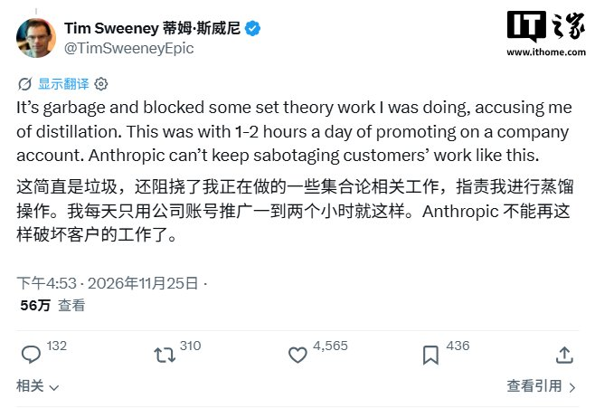

新闻 · 2026-11-26 18:00
Epic CEO 斯威尼怒喷 Claude 是垃圾：误判正常研究为模型蒸馏
Epic CEO 斯威尼在 X 平台怒斥 Anthropic 的 Claude 模型为‘垃圾’，称其在一场关于编程与集合论的研究会话中中断对话，并误判其行为为‘蒸馏’。斯威尼指出，该事件发生在自己仅每日输入一两个小时提示词的情况下，且强调 Anthropic 的检测系统过于激进，已开始误判正常技术研究。斯威尼作为 AI 支持者，此举罕见地公开批评主流模型，凸显安全机制对高水平研究的干扰风险。

来源与核验
单一信源报道，未交叉核实